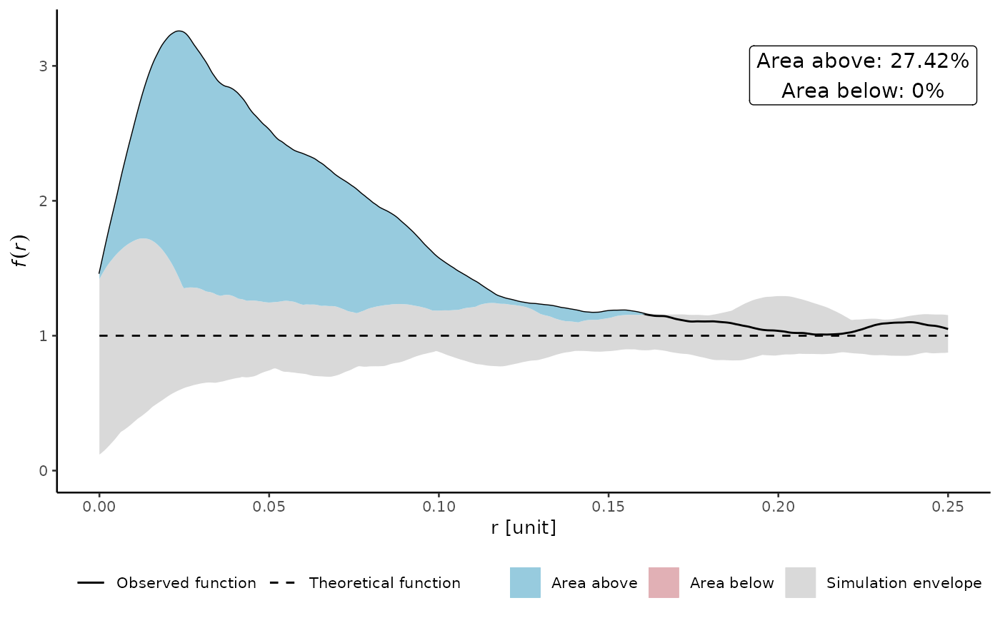

Plotting method for env_summarized object
Details
Plotting method for summarized envelope created with summarize_envelope.
Returns a ggplot object.
Examples
set.seed(42)
input_pattern <- spatstat.random::rThomas(kappa = 15, scale = 0.05, mu = 5)
cluster_env <- spatstat.explore::envelope(input_pattern, fun = "pcf", nsim = 39,
funargs = list(divisor = "d", correction = "Ripley", stoyan = 0.25))
#> Generating 39 simulations of CSR ...
#> 1, 2, 3, 4, 5, 6, 7, 8, 9, 10, 11, 12, 13, 14, 15, 16, 17, 18, 19, 20,
#> 21, 22, 23, 24, 25, 26, 27, 28, 29, 30, 31, 32, 33, 34, 35, 36, 37, 38,
#> 39.
#>
#> Done.
x <- summarize_envelope(cluster_env)
plot(x)
